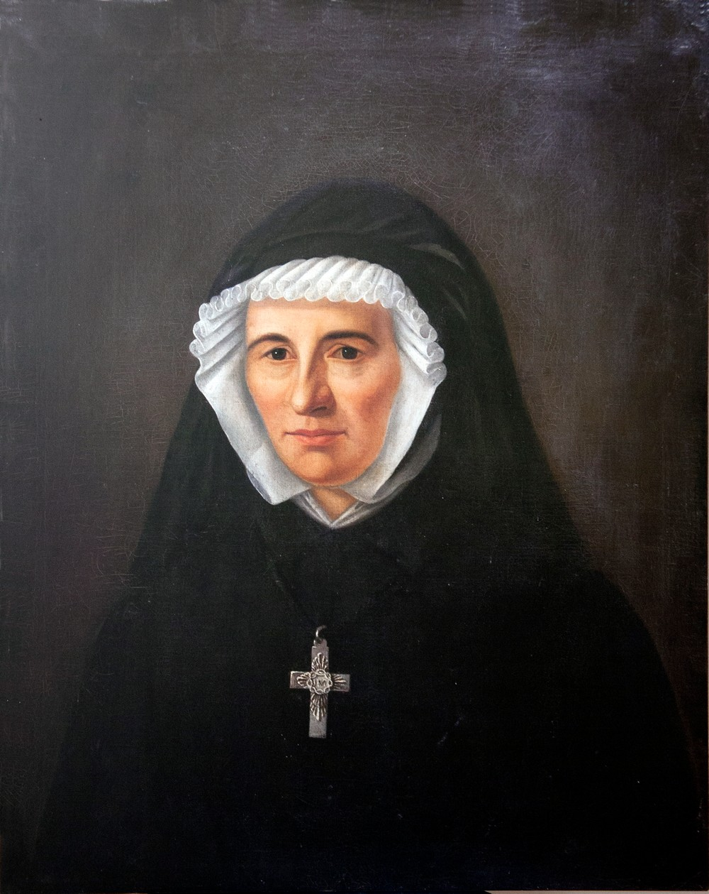

CONGREGACIÓN DE RELIGIOSAS JESÚS MARÍA
Generoso eres padre celestial por permitir conocerte por medio del esfuerzo
de Santa Claudina Thévenet por eso siempre te estaré agradecido

Filosofía
Agradecemos a Dios por la infinita misericordia, por el amor que depositó en Claudina

Misión
FUNDADORA DE CONGREGACIÓN DE RELIGIOSAS JESÚS MARÍA